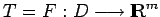

Seien wie im vorhergehenden Abschnitt und . Unter der Voraussetzung der Differenzierbarkeit von T in jedem Punkt der Menge D ist ein Operator definiert, der jedem  das Element zuordnet. Der Operator T' sei auf D stetig (in der Operatornorm); in diesem Falle sagt man, T ist stetig differenzierbar auf
das Element zuordnet. Der Operator T' sei auf D stetig (in der Operatornorm); in diesem Falle sagt man, T ist stetig differenzierbar auf  . Die Menge D enthalte eine Lösung x* der Gleichung
. Die Menge D enthalte eine Lösung x* der Gleichung
Weiter sei nun vorausgesetzt, sowie daß für jedes  der Operator T'(x) stetig invertierbar ist, also [T'(x)]-1 in liegt. Für ein beliebiges Element vermutet man wegen (12.194), daß die Elemente T(x0)=T(x0) - T(x*) und T'(x0)(x0 - x*) ,, nahe`` beieinander liegen und demzufolge die Lösung der linearen Gleichung, also (unter den gemachten Voraussetzungen)
der Operator T'(x) stetig invertierbar ist, also [T'(x)]-1 in liegt. Für ein beliebiges Element vermutet man wegen (12.194), daß die Elemente T(x0)=T(x0) - T(x*) und T'(x0)(x0 - x*) ,, nahe`` beieinander liegen und demzufolge die Lösung der linearen Gleichung, also (unter den gemachten Voraussetzungen)
das gesuchte Element x* approximiert. Auf diese Weise konstruiert man, ausgehend von  , die sogenannte NEWTONsche Näherungsfolge
, die sogenannte NEWTONsche Näherungsfolge
Die Begründung für das beschriebene Vorgehen wird durch eine Reihe von Sätzen, die sich im Allgemeinheitsgrad oder in der Anpassung an spezielle Situationen der gemachten Voraussetzungen unterscheiden, geliefert, von denen exemplarisch nur der folgende zitiert werden soll, aus dem die wesentlichen Eigenschaften und Vorteile des Verfahrens erkennbar werden:
Es gibt zu eine Kugel , so daß alle xn in B liegen und die NEWTONsche Folge zur Lösung x* von (12.196) konvergiert. Darüber hinaus gilt .
Das modifizierte NEWTON-Verfahren erhält man, wenn man in der Formel (12.198) stets den Operator [T'(x0)]-1 anstelle von [T'(xn)]-1 benutzt. Für weitere Abschätzungen der Konvergenzgeschwindigkeit, und zur (im allgemeinen sensiblen) Abhängigkeit des Verfahrens vom Startpunkt x0 s. Lit. 12.7, 12.13, 12.15, 12.21.
| Beispiel Jacobi- oder Funktionalmatrix | ||||||
|
Sei auf einer offenen Menge ein nichtlinearer Operator  durch m nichtlineare Koordinatenfunktionen der n unabhängigen Variablen
Falls für die Koordinatenfunktionen die partiellen Ableitungen
Die Ableitung F'(x) ist eine Matrix vom Typ . Sie heißt JACOBI- oder Funktionalmatrix. Als Spezialfall tritt sie z.B. beim NEWTON-Verfahren zur iterativen Lösung von nichtlinearen Gleichungssystemen (s. Newton-Verfahren) oder bei der Beschreibung der Unabhängigkeit von Funktionen (s. Abhängigkeit von Funktionen) auf. Im Fall m =n kann zur Funktionalmatrix der sog. Jacobian (JACOBI-Determinante) oder die sogenannte Funktionaldeterminante gebildet werden, die abkürzend mit
bezeichnet und bei der Lösung verschiedener (häufig innermathematischer) Probleme eingesetzt wird. |